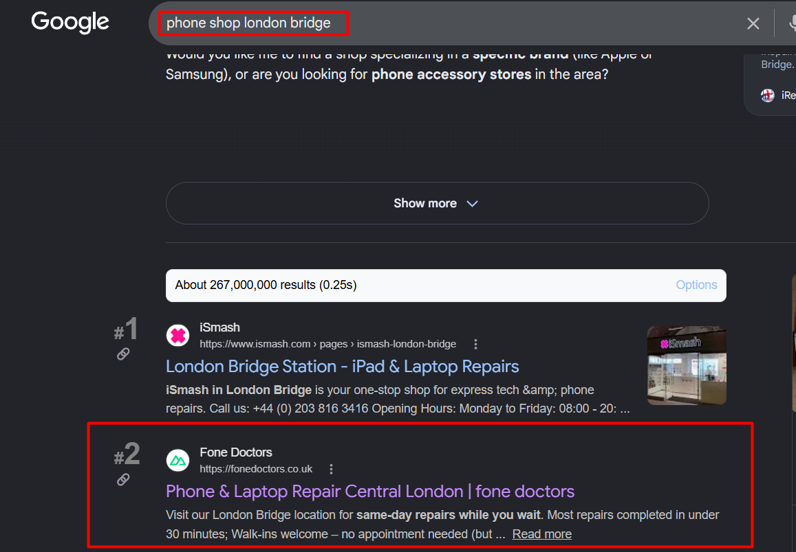
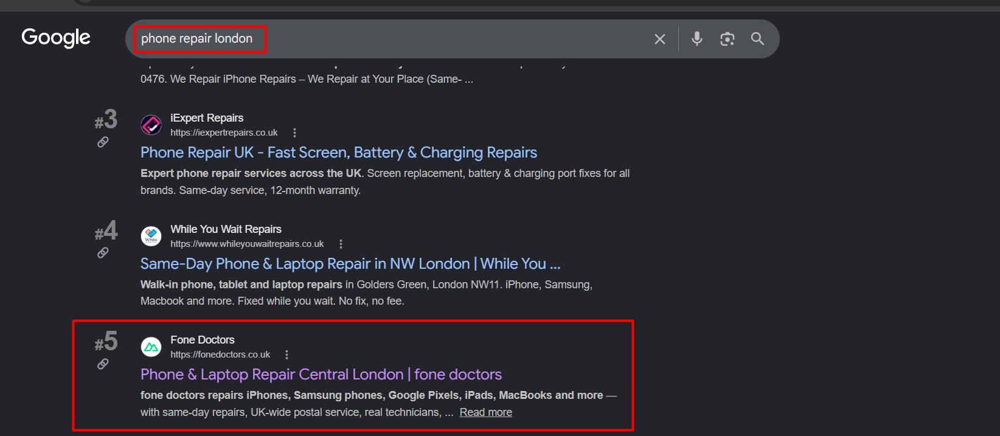
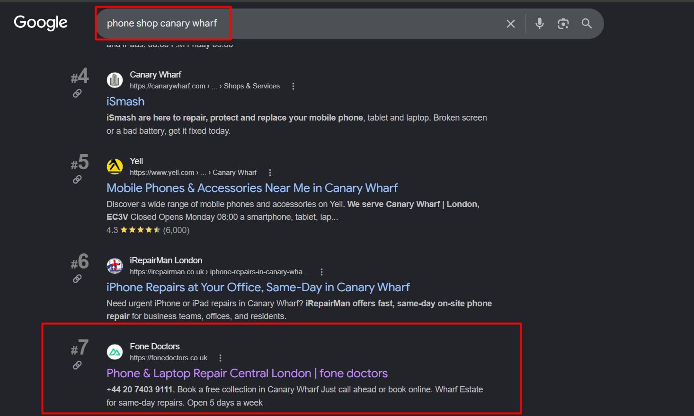
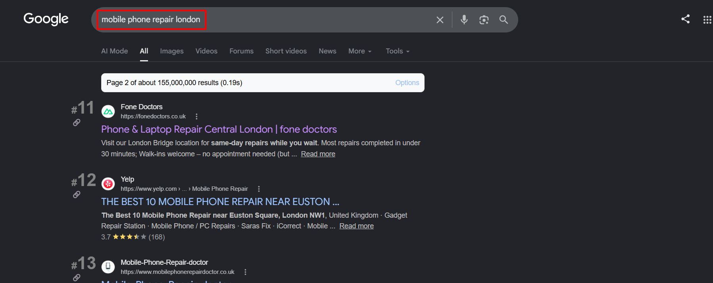
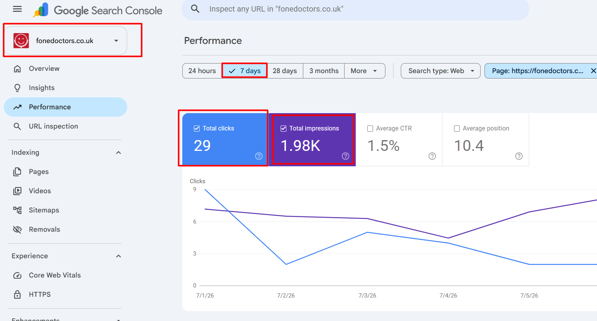

A complete, transparent walkthrough of the search engine optimisation work carried out this month for fonedoctors.co.uk — everything delivered, what each piece means for the business, and exactly what comes next.
This month built the technical and content foundation a repair business needs to compete in London search results. We ran a complete website audit, fixed the faults holding rankings back, connected every tracking tool, produced the core page content, cleaned up harmful backlinks, and studied the competition in depth. The website is now indexed, measured, and already appearing on the first page of Google for several high-value local searches.
A month ago there was no clear way to see how the website performed in Google. Today, every search, every click and every ranking position is tracked; the technical faults that quietly suppress rankings are being cleared; and the site already appears on page one for terms like "phone shop london bridge" and "phone repair london bridge" — the exact searches a customer makes when their screen just cracked and they need a shop today. This is the platform every future gain is built on.
Full audit done · GSC, Analytics & Tag Manager live
9 priority fixes deployed & verified on the live site
Model pages, schema & link cleanup underway
Service pages & ranking climb queued for next month
Every task below was completed and either actioned directly or handed to the development team with clear instructions. This is the full scope — nothing summarised away.
SEO works like building a house: you lay the foundation before decorating. This month was the foundation — measurement, technical health and core content. It isn't the flashiest phase, but skipping it is why most repair websites plateau. With it in place, every content and ranking effort next month compounds instead of leaking away.
These are live Google search results captured during this reporting period. Each one shows the exact position Fone Doctors holds for a real, high-intent search that London customers are typing every day.




"Phone shop london bridge" and "phone repair london" are bottom-of-funnel searches — the person searching has a broken phone in their hand and wants a shop today. Ranking #2 and #5 puts Fone Doctors in front of ready-to-buy customers, sitting alongside and even above national brands. These aren't vanity terms; they convert directly into walk-ins and bookings.
Pulled directly from Google Search Console for the last 7 days — the live, measured performance of the site in Google now that full tracking is connected.

Impressions are strong and steady — nearly 2,000 in a single week, almost entirely from the UK, which confirms the geographic targeting is correct. Clicks are still building, and that's exactly what you'd expect at this stage: a huge share of the keywords currently sit in positions 6–15. As those move up into the top 3–5 (the goal of next month's work), the same impressions convert into many more clicks. The visibility is already here; the job now is turning it into traffic.
Google is already showing Fone Doctors for 256 different search terms. Here's the full breakdown — organised by type — of what's already ranking well and where the biggest growth is waiting.
Live positions — the foundation to build clicks on.
| Search term | Position | Impressions | Type |
|---|---|---|---|
| fone doctors | #1.7 | 9 | Brand |
| fone doctors london bridge | #1.9 | 7 | Brand + local |
| doctor cell phone | #2.0 | 4 | Brand |
| fone doctor | #3.2 | 13 | Brand |
| phone shop london bridge | #3.7 | 52 | Local · high value |
| phone repair london bridge | #4.0 | 5 | Local · high value |
| phone doctor | #4.7 | 35 | Generic |
High impression counts mean strong customer demand. These are the priority targets to move into the top 5.
| Search term | Impressions | Current position | Goal |
|---|---|---|---|
| fone | 80 | #5.7 | Break into top 3 |
| phone repair london | 68 | #6.2 | Break into top 3 |
| phone repair shop | 46 | #8.1 | Page-one top 5 |
| fix phones | 29 | #5.7 | Top 3 |
| phone screen repair | 26 | #15.1 | Onto page one |
| phone screen repair london | 22 | #11.0 | Onto page one |
| iphone repair london | 22 | #13.6 | Onto page one |
| phone repair shops | 21 | #9.0 | Top 5 |
Grouping keywords into clusters is how we build "topical authority" — telling Google the site is a genuine expert on each repair type and each area.
| Keyword | Pos |
|---|---|
| phone screen repair | #15.1 |
| screen replacement | #11.2 |
| charging port repair (farringdon) | #7.6 |
| water damaged phone repair | #19.6 |
| phone camera repair | #14.4 |
| Keyword | Pos |
|---|---|
| phone shop london bridge | #3.7 |
| phone repair canary wharf | #5.4 |
| canary wharf phone repair | #5.3 |
| phone repair liverpool street | #3.5 |
| phone repair farringdon | #17.1 |
The screen-repair and iPhone-repair terms carry big demand but sit on page two today. The dedicated service-page content already drafted is engineered to lift exactly these clusters onto page one — where they start pulling real customer traffic instead of just impressions.
The technical review identified faults quietly holding the website back. The development team has now deployed and verified the critical and high-priority fixes on the live site. Here is the confirmed, item-by-item status.
| Fix | What was wrong (plain English) | Status |
|---|---|---|
| Canonical tags | Location pages were telling Google the wrong internal web address — now always point to the correct fonedoctors.co.uk address | ✓ Live |
| Business data (schema) | The site's structured business info also pointed to a wrong address — corrected so Google reads it properly | ✓ Live |
| Team photo error | A team image returned a "not found" error — the correct file now loads and returns a healthy response | ✓ Live |
| Sitemap conflict | Login, register & password pages were wrongly listed for Google — removed so the sitemap no longer contradicts itself | ✓ Live |
| WhatsApp button | The WhatsApp button showed broken code text instead of a working link — now links correctly in both the floating button and footer | ✓ Live |
| Social share image tags | Missing image dimension & type tags added so shared links preview cleanly | ✓ Live |
| Twitter / X preview cards | Missing preview tags added so links shared on X display a proper card | ✓ Live |
| Language tags (hreflang) | UK-English & default language tags added to every page for correct regional targeting | ✓ Live |
| Indexing rules | Confirmed so Google indexes the right pages and skips checkout & account pages | ✓ Live |
The image that appears when the site is shared on social media is currently the small logo. The tags around it are now technically correct, but a full-size branded share graphic (1200×630) still needs to be designed for the best-looking previews. This is queued as a design task — noted here so nothing is hidden.
Search engines reward sites that are clean, fast and error-free. Every fixed fault removes a reason for Google to rank a competitor above Fone Doctors. These aren't cosmetic — a wrong canonical tag or a page returning errors can quietly suppress rankings across the entire site. Clearing them unlocks the full value of all the content work.
Beyond the fixes already live, the audit flagged larger structural improvements now being worked through with the development team. These are the next wave — each one meaningfully strengthens the site.
| Item | What we're improving & why it matters | Status |
|---|---|---|
| Model repair pages | Turning thin booking-step pages into proper landing pages with unique content, prices and FAQs per device — so each can rank on its own | In progress |
| Duplicate location pages | Merging overlapping area pages so they stop competing against each other and splitting their ranking strength | In progress |
| Structured data | Adding business, breadcrumb & FAQ markup so listings can show rich results — star ratings and FAQs — directly in Google | In progress |
| Image optimisation | Adding descriptive alt text and compressing images for faster load speed and better accessibility | In progress |
| Consistent business details | Making warranty terms, review scores, email and phone identical across every page and listing to build trust | In progress |
| Cookie consent banner | A compliant accept/reject cookie banner to meet UK privacy rules and protect the business | In progress |
| Server-rendered content | Ensuring key content (prices, repair lists) is fully visible to Google, not hidden behind loading scripts | In progress |
Not every link pointing at a website helps it. Low-quality or spammy links can drag down trust and rankings. This month we began identifying and removing harmful links to protect the domain and steadily lower its spam score.
We're working through the list of low-quality backlinks and submitting removals so Google discounts them. At the same time we're building a clean, relevant backlink profile — business directories, quality profiles and local citations — to replace weak links with trustworthy ones. This steadily lowers the spam score and raises domain trust over time.
A high spam score signals risk to Google and can hold back an otherwise healthy site. Removing harmful links and replacing them with quality ones is like repairing a credit history — it takes consistent effort, but it's essential for long-term ranking stability and trust. It's slow, unglamorous, and one of the highest-value protective jobs in SEO.
We studied the top 20 competitors ranking for London phone-repair searches — how strong each one is, and where their weaknesses leave an opening for Fone Doctors.
Domain strength (0–100) estimates how much ranking power a site has built. Higher isn't unbeatable — smart content and clean technical health beat raw strength on local terms.
| Competitor | Strength | Their weakness — our opening |
|---|---|---|
| iSmash | High (54) | Sterile corporate tone; hides pricing behind a long booking funnel |
| Currys / Geek Squad | Very high (78) | Charges a diagnostic fee; impersonal, slow corporate service |
| Lovefone | Medium (41) | Slow mobile speed; thin content on device pages |
| Square Repair | Medium (35) | Keyword-stuffed copy; low-quality footer link farms |
| Timpson | High (58) | Very thin page content; no device-specific pages |
| Repair My Phone Today | Low (28) | Extreme keyword stuffing; repetitive low-value paragraphs |
The leaders have smooth booking tools, live review widgets, detailed store pages with transit directions, and structured FAQ sections that win featured snippets. Our plan matches and exceeds each of these.
A genuine personality, transparent all-inclusive pricing, a "no fix, no fee" promise, named real technicians, same-day service, and eco-conscious messaging. These are exactly the gaps competitors leave wide open — and our content leans into every one.
A clear view of the path — where we started, what's live now, and the priorities ahead.
Full audit, Search Console + Analytics + Tag Manager connected, homepage / about / contact content, full keyword research, technical fix plan, sitemap cleanup, and spammy-link identification. The site is now measurable and properly indexed.
Canonical tags, schema business data, sitemap conflicts, the WhatsApp link, social & preview tags, and language tags — all fixed and verified live on the site by the development team.
Rebuilding thin model pages into rich landing pages, merging duplicate location pages, adding structured data, optimising images, and continuing backlink cleanup to lower spam score.
Publishing dedicated service pages (screen repair, battery, water damage, charging port), building local area pages, and driving the high-demand keywords currently on page two up into the top 5.
Clear, focused goals to turn this month's foundation into measurable ranking and traffic gains.
The site is now visible and healthy. Next month is about depth — richer content, more page-one positions, and a steadily lower spam score — so the strong impression numbers we already have start converting into real customer visits and bookings.
So nothing in this report is a mystery — here's every term used, in everyday language.